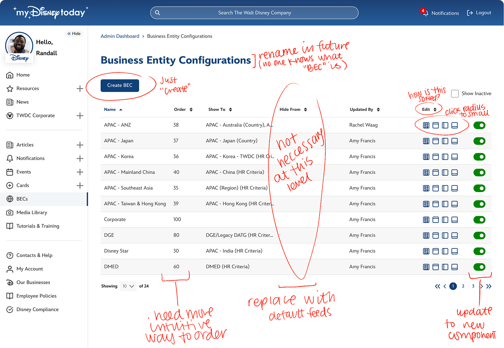

Overview
MyDisneyToday (MDT) thrives on business collaboration. In the early months following launch, our product team took the lead on business configurations and updates through the ServiceNow ("native") portal. This native experience was incredibly unintuitive and required a consistent learning curve. Because of its complexity, it also meant only a few people knew how to use it and reliance on their expertise was eating away their time. Since the initial launch focused on delivering the MVP, the Business Admin Console quickly followed as a key next step. It gave us the opportunity to showcase the customization we could implement in-product while also introducing a user-friendly interface to support 240,000 employees world-wide. What follows is an overview of that console and how it supports MDT's scalability.
🎬 View PrototypeWithout the Admin Console
The biggest struggles we faced without an admin console were:
- Dependency on experienced users - Only a few experts (me, my manager, and one analyst) managed business configurations and updates instead of focusing on their core work.
- Lack of self-service tools for business users - This customization was the first step in displaying how MDT could evolve into a CMS for our business partners to empower them instead of creating dependency on the product team (us).
- Time diverted from product priorities - Supporting configuration needs pulled time and focus away from critical product development tasks.
- Increased accuracy - The native console made it too easy to make mistakes or unintended releases due to its lack of usability.
Opportunities
This introduced a series of opportunities that drove our admin tool experience:
- Reduce product team overhead - Shifting configuration to a seamless and simple experience, frees up the product team to focus on core innovation.
- Accelerate content deployment - Editing, previewing, and updating could be done in a few easy steps rather than tackling the data-driven native console.
- Introduce scalable self-service - This could signify to business and leadershuo that self-service could be launched in MDT to reduce operational friction and scale better with growing business needs.
- Invest in purpose-built admin tools - Building dedicated tooling supports long-term efficiency and reduces reliance on workaround platforms.
Research & Discovery
Business Needs
Because MyDisneyToday delivers a tailored experience for employees across various businesses and regions, it was essential to provide flexibility to curate content. This included the ability to customize navigation and homepage widgets to better serve the needs of specific employee groups.
- Everything in One Place - Searching, applying, and application tracking should live in a single place.
- Poor Communication - Reaching out to recruiters, teams, and hiring managers can be undependable via email alone.
- Visual Hire Timeline - Visually convey where candidates are in the process along with the status of their application.
- Job Suggestions & Recruitment - Suggest open roles based on job preferences and allow employees to open themselves to recruitment.
- Communication Preferences - Offer multiple forms of reliable communication for employees to ensure correspondence.
- Single-Click Application - With Workday profiles, resume uploads, portfolio links, and more, applications can be much more streamlined.
- Role Transparencyn - Make employees aware of a role’s job level, salary, flexibility type, team, and hiring manager.
Proposed Workflow
If not careful, this admin tool could have quickly turned into a web of links, tabs, pages and confusion. I set up a portal workflow to provide an intuitive and simple way to access specific content quickly and seamlessly publish updates.

Creating the Experience
We have third-party developers as part of the MDT product team. I worked with them to transform the native ServiceNow experience into one that was usable and required very little training. These are the implementations designed and developed to invite business collaboration.
List Views
The first page you'd see entering the admin console is a list of business entity configurations. This name carried over from legacy development but really refers to each targets' business experience.
🎬 List View Prototypes:
BECs |
Top Navigation |
Left Navigation |
Navigation Links |
Footers
Iterating BECs
The BEC-level hierarchy received the most iterations due to its possibilities and complexity. We needed to keep it as simple as possible while offering the most efficient layout.
Editing a BEC
Once an admin is inside a business configuration, they can edit various aspects of the portal - the top navigation, left navigation, footer, and homepage cards, or widgets, to include
resources, events and news.
Homepage Cards
MyDisneyToday has a dyanmic homepage. Employees can edit their widgets to create a workspace that best suits them. These widgets include business-specific conetnt such as Featured News, Upcoming Events, and Resources. Other widgets that don't require business involvement are Disney Stock, Learning & Development, Groupd & Clubs, and Employee Recognitions.
🎬 View Homepage Cards Prototype
Requirements
- Default Cards - Businesses are able to establish the initial layout of their homepage, before an employee moves, adds, or removes widgets.
- Default Reources - Like cards, default resources are set by businesses to establish a productive start to an employee's first visit to MDT - an attempt to give them what they need prior to customization.
- Upcoming Events Card - The Events card was targeted per business and region. Employees would only see events they can attend.
- Featured News - Each business had one or more news feeds. On the Featured News card for each business, their would be default feeds. This typically included the business or regional feed plus some enterprise subscriptions like Disney Today and Corporate Socialability. Employees could then unsubscribe to default feeds or subscribe to new feeds themsevles.
- Important Information - Also targeted per location, region, and business, the important information card came to be through COVID as news had to be promoted and "pinned" to employee bulletins such as vaccine information and workplace flexibility guidelines.
Top Navigation
Top navigation was one of the few places businesses could brand MyDisneyToday. To uphold accessibility compliance, we didn't allow for too much color customization. Top navs could be given background colors and text colors. This went through our approval to maintain an accessible contract on the navigation bar.
🎬 View Top Navigation Prototype
Requirements
- Logo - Locked and remained the "MyDisneyToday" logo, only changed for the year of Disney's 100th anniversary in 2023.
- Text color - After implementation of the MyDisney design system and dark mode, this option became a dropdown of only curated colors.
- Background color - Businesses updated this to stamp their brand onto MyDisneyToday
- Preview - Something I really despised about the native console was the lack of knowing. When designing the front-end console, it was important to add in featured so admins could view their work as they go.
Left Navigation
The left navigation panel offered limited customization. We provided businesses with a section of navigation to make their own. Links that did not change were those such as News, Events, Resources, My Account, and Help.
🎬 Left Navigation Prototypes:
Left Nav |
Menu |
Sub Links
Requirements
- Main menus - The highest level were the main menus that expanded to offer additional links.
- Multi-level link management - The left navigation had a hierarchy of Nav Panel > Main Menu > Sub-links. It was important to know what was being edited and to design that flow thoughtfully.
- Link information - After organizaing the main menus, links required fields to define the link names, URLs, icons, and targeting.
Footer
The footer rarely changed. Unless businesses were added, removed, or renamed, the footer was essentially set from launch. However, we needed a way to make adjustments as needed.
Requirements
- Logo - This remained the MyDisneyToday logo.
- Background color - Set to the $footer variable to adjust for light and dark modes.
- Text description - Legality text that was only updated per legal guidance.
- Links - Linked to the privacy policy and each business' content page (different than homepage, click the link at the bottom of this page!)
Explore more of the Admin Console
Managing MDT Pages